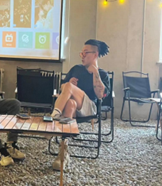
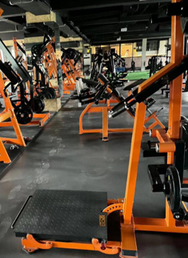
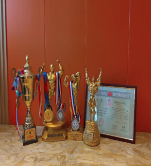
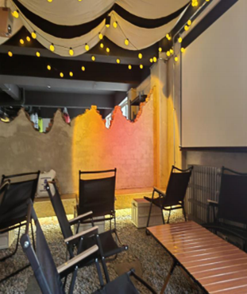

人物专访
让热爱在小乡 镇生根发芽
周杰是一名健身教练、 OGM 健身房的创始人，现在 担任健身房老板， 同时也是一 名健身爱好者， 他为自己所热 爱的事业里奋斗拼搏， 带着梦 想一直奔跑在路上， 他鼓励更 多的群体去锻炼， 保持良好的 健康状态， 也希望更多的人参 与全面健身活动之中。下面我 们走进他的健身世界吧！
杰教练
“周教练您好，就目前情 况有很多的健身房都选择建 在城市， 比较发达的地方， 您 却选择建在这个比较偏远的 县城，请问您的初衷是什么呢？”
“我现在的经营观念而言， 健身是我生活中的一部分， 那 如果我不来的话，你们去哪 儿？你们为了求知来这偏远 的地方，我觉得应该给你们 提供一个更优质的生活服务。 我不希望现在的大学生都待 在宿舍里面， 待在学校里面， 而且我是打心底里面去想推 广健身， 想让所有的青少年走 进健身房。这就是我最大的初 衷， 这是我选择这个地方最好 存在即合理的答案， 就比如有 人的地方就有市场， 不管这个 市场规模的大小， 最主要的是 看你怎么经营， 既然来到这地 方， 你会用经营好， 你的买卖 也不会差，你的事业也不会 差。这就是我来这个地方做健 身房的一个最大的原因就是 来推广健身， 因为热爱， 所以 我来到这儿。”周杰带着热爱 来到县城， 给周边的人带来了 健康。
“您把健身房建在比较偏 远的地方， 关于交通或者是物 资资源等方面都会比较缺乏， 那么您在健身房的事业当中 有遇到什么重大的困难吗？” “最大的困难就是所有的 群体， 学生会员对健身的不理 解， 对运动的不理解， 我们总会说的一句话“今天不养生， 明天养医生”，我们说个题外话， 其实你们有很多的长
辈， 我们的父母也好， 亲戚也好， 去医院看病时， 大夫说过最多 的话是平时多去锻炼， 夫说， 你该锻炼的时候， 你才被迫去 锻炼， 我们为什么不提前把这 些问题都扼杀在摇篮里面？ 让健身成为一种习惯， 我们为 什么生了病的时候， 花三五万 啊， 十几万去吃一个病， 而不 愿意花几百块钱， 走进健身房 办一张卡， 去体验健身给自己 身体的反馈以及生活中反馈。 所以我觉得作为健康状况来 说的时候， 我不看这个地方的 远近如何， 我只看这个地方市 场怎么样？还是那句话， 因为 有了
你们， 所以我才想把这家 健身房做好，如果没有你们 的话， 我开健身房是徒劳嘛， 对不对， 所有的一切都是围绕 着会员围绕着消费者去做的。 我来到这个地方， 最大的困惑 就是不理解。就是会员都不理 解， 会员觉得我为什么要花钱 去让自己那么累啊， 我为什么 花钱去健身？还有很多人不 理解，说我卖的贵，问题是 对女孩而言，一根口红都要 三四百， 她们不觉得贵。男孩 而言， 一套好的电脑要上万， 一双好一点的鞋要上千。我们 可以把这个钱花出去会觉得 不贵， 而我们给自己的身体去 投资， 一年才几百， 大家会觉 得贵， 这个消费观是我不太理 解的， 消费观直接影响到我们 的认知问题。大家还是不明白 锻炼跟健身给自己的身体以 及未来成长的发展带来的回 馈跟好处。当然， 这个东西是 社会原因， 也是我们体制内的 原因， 我们没办法靠个人一个 小团队去解决，只能潜移默 化。”给自己投资才是最好的 理财， “养医生不如养生”健 身可以增强体质促进健康， 增 加外形魅力值， 运动是不会让 人后悔的投资。
“作为一名健身房的老 板， 当面临会员对你产生不信 任的时候， 您是怎么去处理这 种问题的呢？”
“这个问题就是我们所说 的客诉问题， 我们要知道一个 道理我们不是人民币， 我们做 不到， 人人都喜欢”也是我的 原则，比如说你开店有 10 个 会员，里头有 2 个骂你的就不 错了，那毕竟还有 8 个夸你的。 那没明白， 因为龙生九子， 子 子不一，每个人都是一个不同 的个体， 我们不能用一样的方 法来面对所有的人， 能说的是 尽全力能做好你自己该做的， 能得到 60% 的认可，就已经 非常不错了， 要知道做买卖很 难， 然后做健身房的买卖就更 难了。所以我看的很开朗， 我 不会去追究， 他们对我产生影 响而去影响我的发展。随着全 民健身运动的开展。我们可以 发现现在很多城市里面都会 有体育馆、体育公园、体育社 区等等。”
“您觉得当建设这些基础 设施的时候，人们有了更多 选择， 有更多健身的机会。对 你健身房的事业会不会有影 响？”
“首先， 我觉得没有， 不仅是 没有影响， 而且我会很开心， 当我们国人都主动去选择走 进健身房， 走进训练场馆。不 管你是健身也好， 打羽毛球、 乒乓球、篮球也好， 哪怕是广 场舞也好， 当我看到我们的国 民都在主动去训练， 去锻炼的 时候， 这是一件好事啊。这是 国家的一件幸事， 而不是说对 我的影响怎么样， 就比如说咱 们国家的菜系， 粤菜、鲁菜、 陕菜， 难道说这陕菜做的好粤 菜就别开了， 是不是这个道理 存在即合理， 我们没有办法去 满足所有人的需求， 我们只能 在自己的赛道里面做到最好， 用心服务那些主动来找你的 人， 就像这个学校， 这附近这 么多牛肉面， 有酸菜牛肉面、 有老街牛肉面、战国牛肉面都 叫牛肉面， 取决于用户口味的 选择。我是觉得这是好事， 大 家都来锻炼了多好的事儿。真 正能够选择 OMG 选择健身的 人， 他是对健身有一定执念的 人。”
“疫情三年对你的健身房 事业前后有什么明显的变化 吗？”
“有明显的变化，首先 第一点，疫情来临，我们的 各行各业， 压力都非常大， 我 们通过疫情这件事情来看， 疫 情之后明显感觉到来的人会 更多了。我觉得是思想的觉醒 了。疫情是一把双刃剑， 坏的 方面大家都知道， 那么好的一 方面， 锻炼身体的重要性， 增 强身体免疫力。所以我发现不 管吃这药打那针， 到最后锻炼 才是王道， 因为我们的付出， 我们流出的汗都是自己的回 归。我们是大学生健身房，
消 费群体是 99% 是大学生，面 对大学生涉及到两个原因， 内 因就是父母看见了自己小孩 的身体的变化， 因为寒暑假回 家一般情况下不常出去， 不怎 么运动， 从疫情当中看到， 那 些真正锻炼基础的人， 免疫力 很强，很难感染。就是疫情
给我们带来的， 其实最大一个 内因就是我们自己觉醒， 不管 从家长还是从社会， 还是从你 个人来说， 都知道运动是好事 儿。所以说疫情以后我们的客 户流量反而变得更多， 疫情也 是一个遮羞布， 给我们遮掉了 很多行业的一些不好的东西， 让我们更好的去反思，我希 望是我们所有的青少年， 我们 所有的群众， 我们都去锻炼。 千万不要等到大病大灾来袭 的时候， 再去锻炼。我今天怎 么样对待自己的身体， 那么我 的身体以后就会怎么对你。” “你会把这个健身行业一直 做下去，甚至会做的更好 吗？”
“首先，我能跑到这个 村里面来干这个事儿， 你们应 该就能看到我的决心， 我觉得 这个行业非常好， 我也很热爱 这个行业， 我也更真正的想把 这家店做好， 让我们两所大学 的学生都走进我们的健身房， 给你们提供一个除了健身以 外，能够提供给你们一个生 活， 娱乐， 休闲的一个场所， 不能想让你们的。大学 4 年的 生涯变得特别枯燥。所以我会 坚持做， 把健身做好， 也想把 OMG 做的更好。
此次通过采访周教练让 我们深刻的体会到健身的重 要性， 以及他奋斗的初衷， 把 健身房建在学校附近，给大 学生提供了良好的运动场所， 同时也希望更多的同学参与 健身活动之中， 把健身重视起 来， 全民健身事关全体人民的 福祉。对于个人而言， 它是最 实惠的的健康投资， 可以让我 们的精神与体魄都更加强健。 对社会来讲， 它是最普惠的公 共服务， 有利于保障人们的身 体健康。